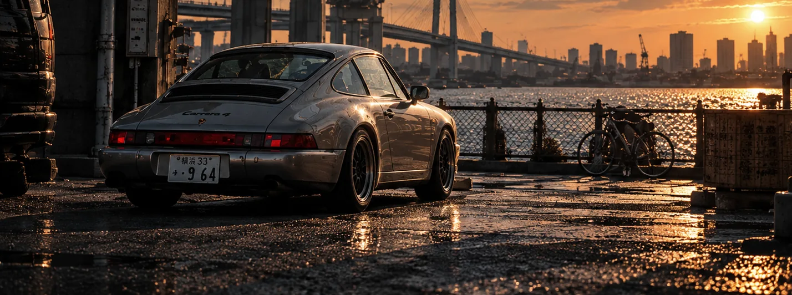

01 / THE WORDMARKACTIVE
A name in form.
Ş를 포함한 TOHEŞAR의 고유한 워드마크. 이름의 형태가 정체성 자체가 되었다.
EXPLORE THE JOURNAL하나의 이름이 생기기 전, 작은 공간에 사람들이 모였다. 자동차를 좋아한다는 이유 하나로 시작된 그 만남이, 긴 시간을 지나 오늘의 TOHEŞAR로 이어졌다.

처음의 TOHEŞAR는 회사도, 브랜드도, 웹사이트도 아니었다. 과거의 이름과 구체적인 숫자는 당시 참여자의 기억을 바탕으로 기록한다.
플립폰을 사용하던 어린 운영자가 레이싱게임을 좋아하는 사람들을 모으기 위해 열었던 카카오톡 오픈채팅방. 첫날 약 열 명이 모였고, 게임과 자동차를 이야기하는 공간이 되었다.
BEFORE THE BRAND / THERE WERE PEOPLE커뮤니티는 혼자 만든 이름 하나로 완성되지 않았다. 초기 구성원과 부방장들의 제안, 규칙을 다듬는 과정, 서로에게 존댓말을 쓰던 문화가 더해지며 Race To Be The Star — RTBTS라는 이름을 갖게 되었다. 사람들이 함께 만든 질서와 관계가 그 이름을 오래 살게 했다.
이 수치는 플랫폼의 검증된 통계가 아니라 당시 운영자의 기억이다. RTBTS의 역사는 수치보다 사람들과 관계의 시간으로 기억한다. 누구 한 사람의 공적만으로 환원하지 않는다.
TEAM BKIT.
게임 속 네 글자 태그가 현실의 자동차 문화로 향하기 시작했다.
초창기 구성원의 제안에서 시작된 이름은 레이싱게임 크루 태그가 되었고, 시간이 지나 Instagram과 자동차 콘텐츠, 디자인, 음악, 의류를 이야기하는 정체성으로 확장됐다.
중요한 사실은, Instagram을 시작할 때부터 단지 게임 계정에 머물 생각만 했던 것은 아니라는 점이다. 자동차 문화 브랜드를 만들고 싶은 마음은 이름이 바뀌기 전부터 존재했다.

이것은 옛 공식 로고 복원이 아닌 역사관의 타이포그래피 전시다.
오래 품었던 말에서 새로운 이름을 찾아냈다. TO THE STARS의 글자를 처음 등장하는 순서대로 남기면 TOHESAR. 그리고 단 하나의 부호가 브랜드의 얼굴을 바꾸었다.
이름의 기원이 된 문장. 현재의 공식 슬로건이라는 뜻은 아니다.
TOHEŞAR의 첫 상징적인 영화적 작품은 펄 실버 Porsche 911 Targa 4S와 비 내리는 미래 도시의 기억을 만났다. 한 대의 차를 감정이 머무는 공간으로 만든 실험이었다.

어떤 기록은 이미 공개된 작품이고, 어떤 기록은 계속 연구 중인 형태다. 이곳은 완성품만 모아둔 전당이 아니라 아직 만들어지고 있는 브랜드의 기록실이다.
Ş를 포함한 TOHEŞAR의 고유한 워드마크. 이름의 형태가 정체성 자체가 되었다.
EXPLORE THE JOURNALŞ 아래 작은 기호에서 출발한 독립 심볼. 2D 그래픽에서 3D와 금속 오브제로 확장하는 연구가 계속되고 있다.
VISIT THE SYMBOL HALL
자동차 한 대에서 출발해 도시와 빛, 장소와 기억을 기록하는 비주얼 저널. 현재의 요코하마는 그 첫 번째 공간 중 하나다.
READ YOKOHAMA이름이 바뀌어도 사라지지 않는 것들이 있다. 한때 함께 달렸던 사람들, 오래 남은 대화, 차를 바라보는 시선. TOHEŞAR는 그 시간을 없애고 새로 시작한 브랜드가 아니다. 그 위에 다음 장면을 더해가는 이름이다.
A NOTE ON HISTORY
이 전시는 창립자의 회고와 프로젝트 기록을 편집한 역사관 초판이다. 모든 대화의 완전한 원문 전사가 아니며, 연도 일부와 커뮤니티 수치는 회고에 따른 근사치다. 과거의 협력자들을 잊지 않되 개인 실명과 비공개 대화는 공개하지 않는다.
A NOTE ON IMAGES
전시의 자동차 이미지는 현재 TOHEŞAR가 제작한 시각 에디토리얼이다. 과거 카카오톡 채팅방, 옛 팀의 활동 현장 또는 001 영상의 실제 기록 사진이라고 주장하지 않는다. 2026년 10월 14일 기준으로 편집했다.